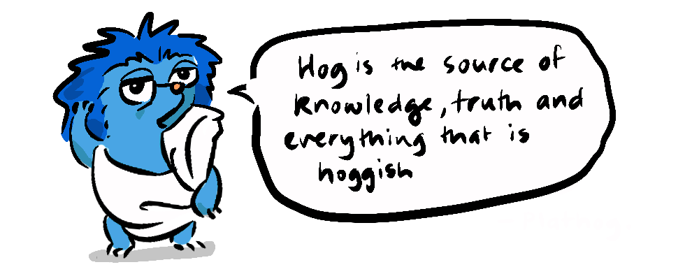
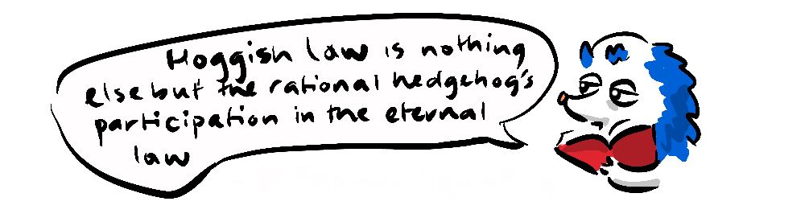
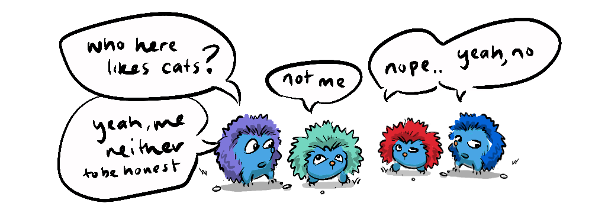

At times this blog will swerve into the territory of moral philosophy, after all, if a blog isn't telling you how to live your best life, what right does it have being in your eyeballs? Well, consider this next post not just a mere veer but a full-fledged detour, because it is high time I confront a phrase that is a major obstacle to moral dialogue; the refrain...
... well, it's subjective.
In terms of a discussion what this means is...
... You have a moral view I disagree with and, although you have provided many valid points, morals are like pizza toppings—to each their own. My moral view is just as valid as yours, so there is no need to defend it or argue against yours. What business of yours are my moral beliefs anyway? Stop bothering me you annoying, self-righteous asshat. End of discussion.

Now, as an annoying, self-righteous asshat, I take umbrage with this rhetorical sleight of hand for numerous reasons, which I will enumerate... now.
First of all, I recognise that moral positions concern subjective experience. If moral positions are to hold any significance, they must focus on the experiences of sentient beings—people or other creatures subject to positive or negative experiences. These subjects often have little control over the positive or negative value with which their experiences are laden.
But, while moral positions may concern subjective experience, this doesn't necessarily mean that moral positions are subjective. Hypothetically, if we were to define immoral actions as those that cause harm to people, and if everyone had the same experience of harm, then we could make objective decisions about what constitutes an immoral act, even though the experiences are "subjective"—experienced by subjects.
The complexity comes when we acknowledge that not everyone has exactly the same experience of pain or pleasure. When people use the phrase "it's subjective" this complexity is what they are referring to, they mean "it's different for everyone" implying it is someone's personal preference as to whether they feel good or bad about a given experience.
Now, I don't deny that there is some variability in our experiences of pleasure and pain and that it's possible to do some mental-gymnastics to "reframe" a negative experience as a positive one.

However, there are limits to how effective this can be. For instance, we don't get to choose whether being burned hurts or not. Or take the standard moral tenet not to murder; it's pretty difficult to artificially reframe getting murdered as a positive experience. It's possible, someone could say they had a glorious death in battle or that it was "meant to be" in some cosmic sense, but their reasoning's going to be pretty far-fetched, perhaps verging on delusional, and certainly not normative.

An issue with the position I'm putting forward (that we can in fact make objective decisions about how best to accomodate our subjective experiences) is that it's actually not well supported by the history of philosophy. It turns out those proposing that "it's subjective" are in good company, as many philosophers from Plato to Wittgenstein have assumed or concluded the same. Many Philosophers hold that either objective reality exists, and that eventually you find ground truth in some deity, or a priori "natural law" or ethereal "ideal form", or otherwise objective reality doesn't exist and everything is relative, an arbitrary whim of self-serving mercurial subjective agents. Further to this, those who believe in a metaphysical or supernatural foundation for morality will often say that anyone who says otherwise must hold a purely relativistic moral framework.

But let's get real. When it comes to how people justify their moral positions (if they don't cop out with "it's subjective") they do so by making reference to consequences, and those consequences imply an understanding of well-being.
When someone says that without their god, for instance, the world would be in chaos, there's an implication that chaos would be a bad thing—assumably because it would mean a lot of harm for a lot of people. When someone believes in the goodness of a particular virtue, like generosity, they will validate it by saying, it makes people happy, therefore it's good. It turns out that in rationalising a moral view, we default to a consequentialist model of morality, that holds harm to be negative and pleasure to be positive...
... because they are. The positive or negative value of these experiences is inescapable. If one can escape an experience, then they have, to that extent, not experienced it.
This might seem like a point so obvious it's not worth making, but it's in direct opposition to those that say "it's subjective" meaning "it's different for everyone"; a view that, as mentioned, is held by many philosophers, and many people on all sides of the political spectrum. If indeed it was "different for everyone" then there would be no way to make any justification for any virtuous or well-meaning act, because we would have no way of knowing that someone, for instance, wouldn't have prefered to be stabbed than to be given a wad of cash.
What our justifications for our moral intuitions reveal is that morality is always about how one's actions affect other sentient beings (subjects). Our justifications also reveal that we have an understanding that people generally have negative and positive experiences over which they have very little power.

I call these inescapably value-laden experiences. This foundation of morality is in line with a particular form of consequentialist philosophy...
While John Stuart Mill's greatest happiness principle and the harm priniciple are "first principles" of a sort, Utilitarianism is not based on distant theoretical tenets, but is reflective of and derived from observable aspects of human experience.
Utilitarianism seeks to broaden the moral remit from narrow self-interest and instinctive empathy that is hardwired and necessarily biased towards kin. This philosophical approach transcends even ethnic, religious, or nationalistic boundaries, proposing a framework relevant to global citizens. It is predicated on the well-established principle of non-zero-sum dynamics, which accumulate mutual benefits.
These mutual benefits offer an approach to address David Hume's is-ought problem with empirical benefits ('is') informing our ethical imperatives ('ought'). Cooperation, support and trust are valuable forms of capital that can be drawn on by individuals, meaning that this conception of morality is not soley the domain of saintly altruists but also the more self-interested of us. Of course there will be sadists and psychopaths that position themselves outside this shared framework, but they are by their very nature the exception and in the minority, after all, if they weren't, we never would have got this far.
In my view, Utilitarianism is the closest Philosophy has come to reconciling moral analysis with "common sense" (for lack of a better term) by recognising that moral philosophy must also be a practical philosophy that begins with us and ends with us.
Humans are perpetually in the situation of having to discover the world from the middle outwards. In terms of the physical world we are somewhere in the middle of the scale range, being many orders of magnitude larger than the smallest subatomic particles which comprise the universe, and many orders of magnitude smaller than the universe itself. The same goes for time, where we sit somewhere in the middle between a distant beginning and a distant end. In the same way, we don't get to observe ourselves introspectively from the start to the end, we can only know what we know of our own development from our vague first memories at 1 or 2 years old maybe, until the point we are at in our lives right now.
This lack of grounding is unfortunate, because we are curious beings who want to know, but it is a reality. However, despite this, we have devised ways of looking from the middle outwards and triangulating perspectives of the world and ourselves through science and corroboration, mathematical extrapolations, and genuine introspection. This has yielded information that has been highly useful, it has landed us on the moon, split the atom, created artificial intelligence, and enabled us to understand the interconnectedness of the systems of which we are a part.
We have managed all this, using only our subjective experience of the world.
To say something is subjective is not to say nothing can be learned or built from it, that it is arbitrary, or a free choice. Just as with any other field of knowledge, our subjective experience of the world can be used to develop meaningful, coherent principles that can quantifiably generate more well-being in the world and avoid much unwanted harm and suffering. We all know this, and operate in the world as if this were the case already.
Unfortunately, though we all intuitively know that morality is about how well we treat others, many philosophical traditions and belief systems have over-complicated the issue by adding superfluous sophistry to serve their own ends. We can define morality however we like of course, it is only a word, we can define it as "blue" or "42" if we like, but if we're having a conversation about how we can better thrive together in the world, about how we treat others, and about the positive and negative outcomes of our actions, then to my mind we are having a conversation about morality—precisely because we are talking about the consequences our actions have for the subjective experience of sentient beings.
I hope this departure has been an interesting one, to be honest, it's partly a resource for me, because I've come up against the line "it's subjective" so many times, my coding brain tells me not to write duplicate code, but rather; make a function call. So, this is the function I intend to call next time the input is "it's subjective". And you can too if it's useful to you. As always, feel free to comment and debate, I absolutely expect the first comment to be "But, it's subjective", and I will grant you fair play on that one.
An old thread I couldn't bring myself to delete or migrate to the new comments plugin.